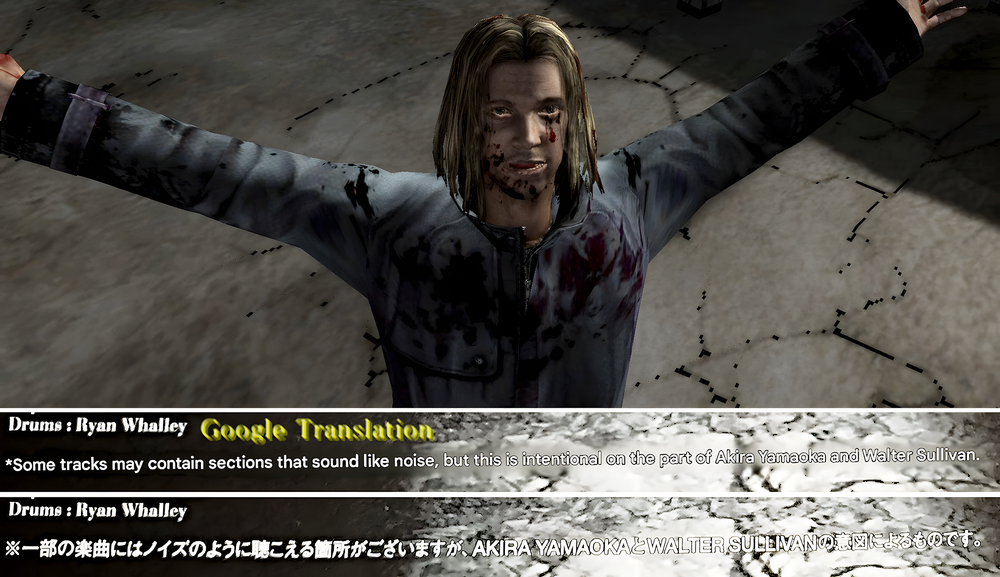
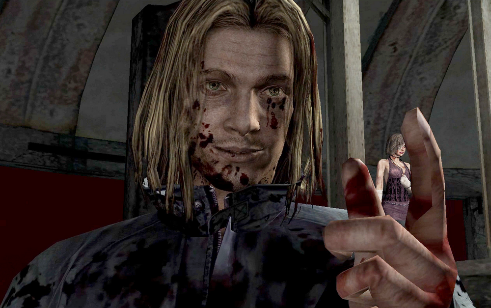
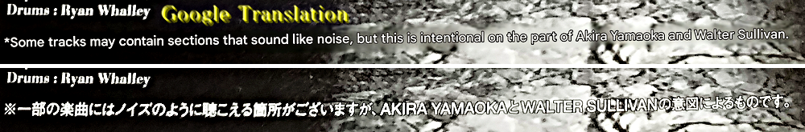
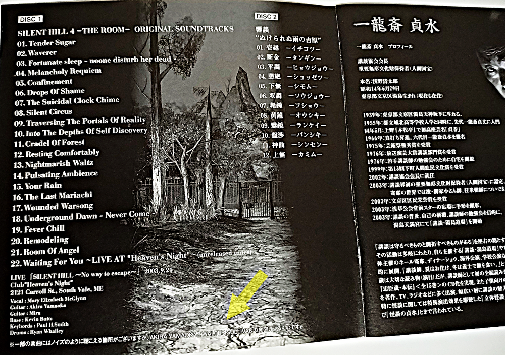
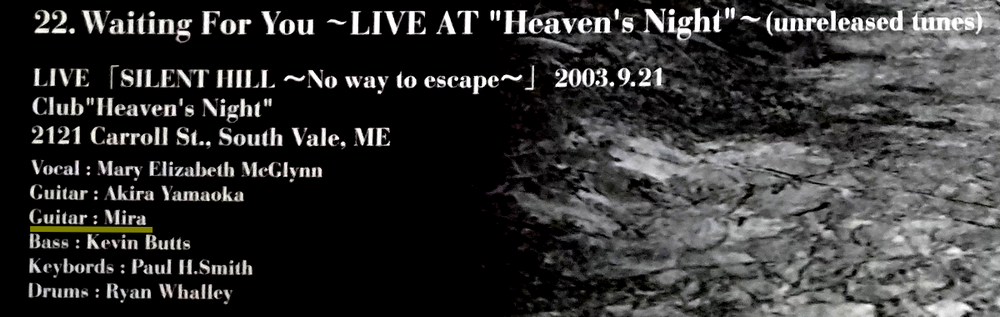
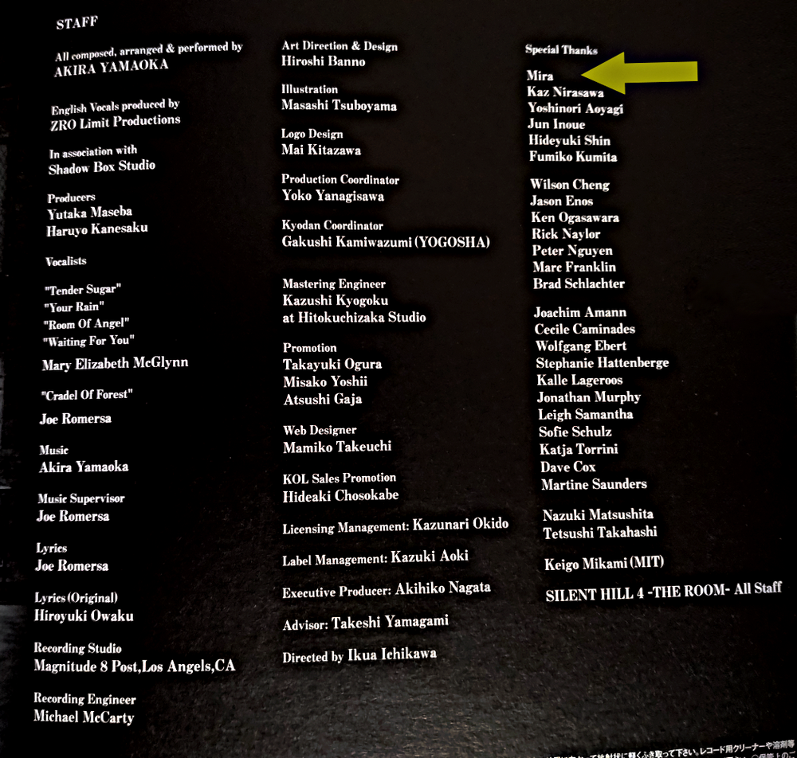

[SH4] Did You Know? Walter Has Musical Talent?!

Did you know that Walter also worked on the SH4 OST?
![[SH4] Did You Know? Walter Has Musical Talent?!](img/da49.png)
This is a mirror of the DeviantArt version linked above, provided as a backup and for easier access.


The text blends into the background, so it's a bit hard to read. The Japanese version of the SH4 soundtrack has this note:

"Some tracks may contain sections that sound like noise, but this is intentional on the part of AKIRA YAMAOKA and WALTER SULLIVAN."
In other words, Walter was involved in the soundtrack too! But I have no idea which parts this note is referring to... Someone, please tell me... And I wonder how it was written in the English version.

In Japan, right after the game was released, people called him things like "the man in the blue coat" to avoid spoilers. So people were arguing like, "The soundtrack has spoilers!" or "No, no, they wrote the names in English even in the Japanese version to avoid spoilers!" But it never quite sparked that level of debate... Still, it's a story about Walter's musical talent that only people in the know are aware of.

Everyone knows that Mira the dog plays guitar, but I don't think this is very well known. For some reason, this part was cut from the Silent Hill wiki too.
Mira's name also appears in the "Special Thanks" section of the staff credits, though...

There doesn't seem to be a mention of Walter's name here.
What was their intention behind saying "this is intentional on...?" Were they trying to make it feel unsettling or scary...? Imagining Walter having a meeting with Yamaoka-san about the soundtrack makes me laugh. Maybe just a Japan-specific joke. By the way, unfortunately Henry's name didn't appear anywhere, though.
As I wrote in the "Walter's Job Hopping" page, Walter was also juggling many different jobs when he caused the incident. Perhaps this is another example of his versatility.